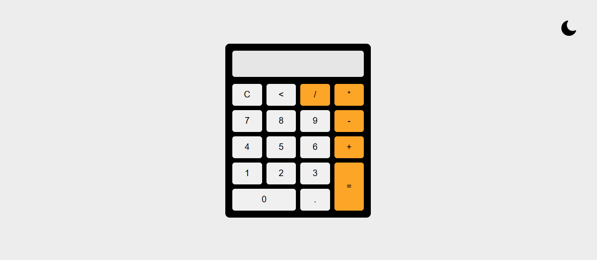
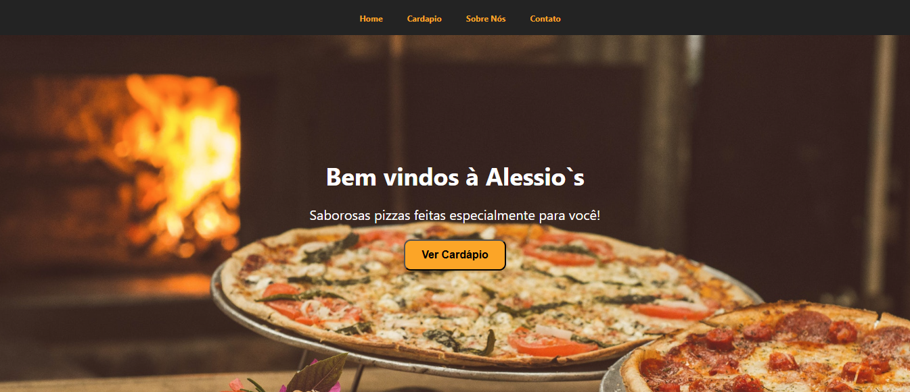
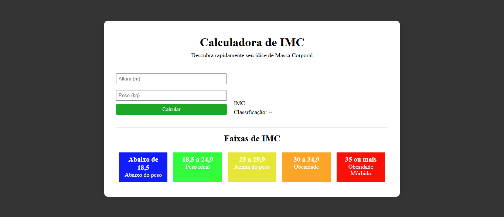

Sobre mim
Estudante de Análise e Desenvolvimento de Sistemas e desenvolvedor em início de carreira, sempre buscando aprimorar meus conhecimentos e habilidades técnicas. Tenho interesse especial no desenvolvimento Full Stack, trabalhando com linguagens como JavaScript e Python, além de frameworks modernos, bancos de dados SQL e integração de APIs.
Minhas habilidades


Meus projetos
-

-

-

Calculadora moderna
Uma calculadora moderna e estilizada, desenvolvida com HTML, CSS e JavaScript. Possui funcionalidades básicas de uma calculadora tradicional, mas com um design atraente e responsivo.
Landing Page Alessio´s Pizzaria
Uma landing page para a pizzaria fictícia "Alessio's Pizzaria", criada com HTML e CSS. A página apresenta o cardápio, promoções e informações de contato, com um design atraente e fácil de navegar.
Calculadora de IMC
Uma calculadora de Índice de Massa Corporal (IMC) desenvolvida com HTML, CSS e JavaScript. Permite aos usuários calcular seu IMC com base em peso e altura, fornecendo uma avaliação rápida da saúde corporal.